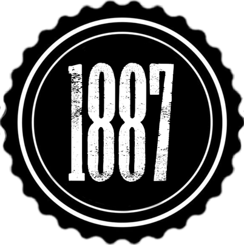
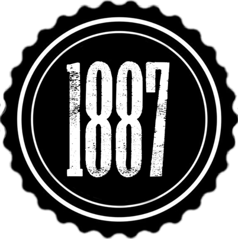

About
Ang Noli Me Tangere, na ang orihinal na ngalan ay The Social Cancer ay ang unang nobela na isinulat at inilathala ng pambansang bayani ng Pilipinas na si Dr. Jose Rizal noong 1887. Inilathala ang unang nobela ni Rizal noong dalawampu’t anim na taong gulang siya. Ito ay nagmula sa banal na katagang “Huwag mo Akong Saligin” o sa Ingles ay “Touch Me Not” na nanggaling sa Biblia. Makasaysayan ang aklat na ito at naging instrumento upang makabuo ang mga Pilipino ng pambansang pagkakakilanlan.
Bunga ng pagkakabasa niya sa tatlong aklat: The Wondering Jew, Uncle Tom's Cabin, at ang Biblia. Ang The Wandering Jew ay tungkol sa isang lalaking kumutya kay Hesus habang siya ay patungo sa Golgota. Ang lalaking ito ngayon ay pinarusahan na maglakad sa buong mundo nang walang tigil. Dahil rito, tumindi ang pagnanais ni Rizal na makapagsulat tungkol sa pagmamalupit ng Kastila sa mga Pilipino.
Ginamit ni Rizal ang kaniyang kakayanan at katalinuhan upang mailathala ang kaniyang opinyon at pananaw ukol sa mga isyung panlipunan sa panahon ng pagsakop ng mga Kastila. Isa sa mga dahilan kung bakit isinulat niya ang Noli Me Tangere ay upang mabuksan ang mga mata ng Pilipino sa kanser ng lipunan na nangyayari sa bansa. Dito ihinayag nya ang maling pagtrato, pang-aabuso, at paghaharing ng mga prayle sa mga Pilipino.

 

Mga Detalye :
-
- Pamagat
- :
- Noli Me Tangere
- Inilathala noong
- :
- 1887
- May Akda
- :
- Jose Rizal
- Bansa
- :
- Pilipinas
Quotations:

“ Cowardice rightly understood begins with selfishness and ends with shame. ”-Jose Rizal, Noli Me Tangere
“ He who does not love his own language is worse than an animal and smelly fish. ”-Jose Rizal


“ I die without seeing dawn's light shining on my country... You, who will see it, welcome it for me...don't forget those who fell during the nighttime. ”-Jose Rizal, Noli Me Tangere
“ The youth is the hope of our future. ”-Jose Rizal


“ He who does not know how to look back at where he came from will never get to his destination. ”-Jose Rizal
“ The righteous man pays the sinner's bill. ”-Jose Rizal, Noli Me Tangere